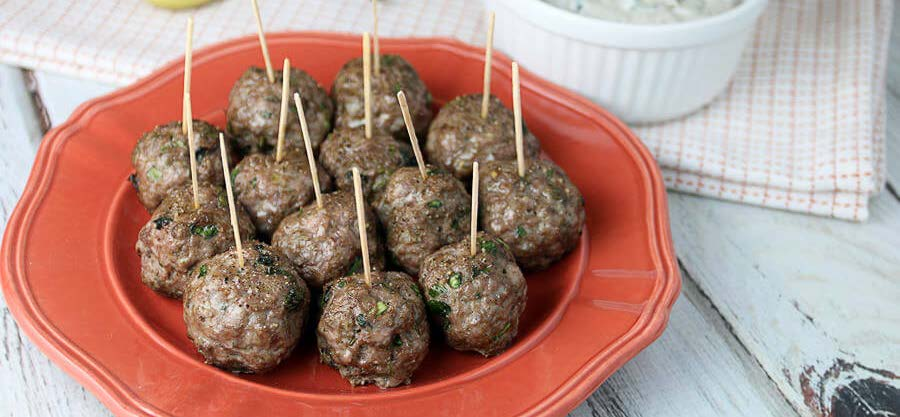
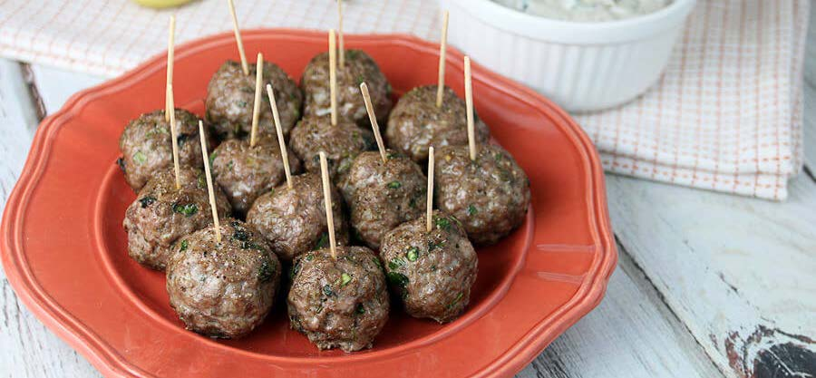
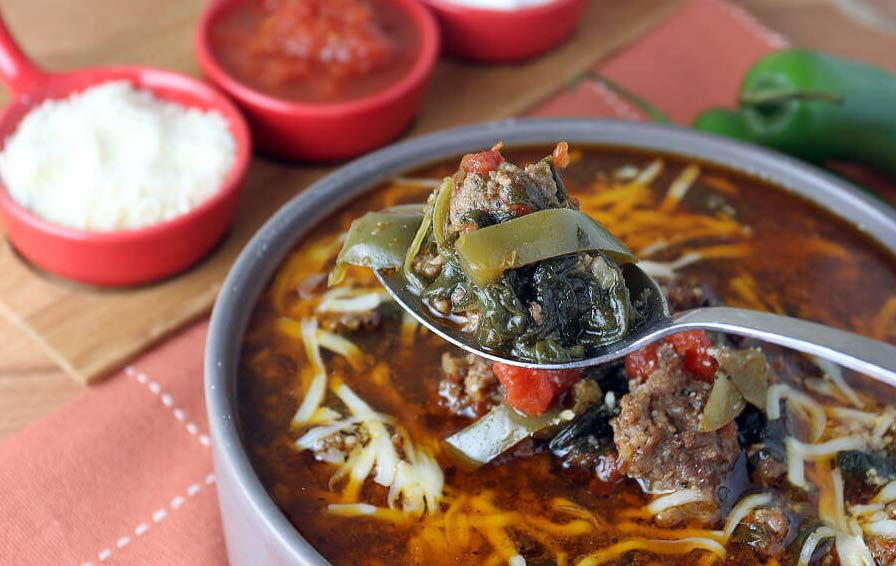
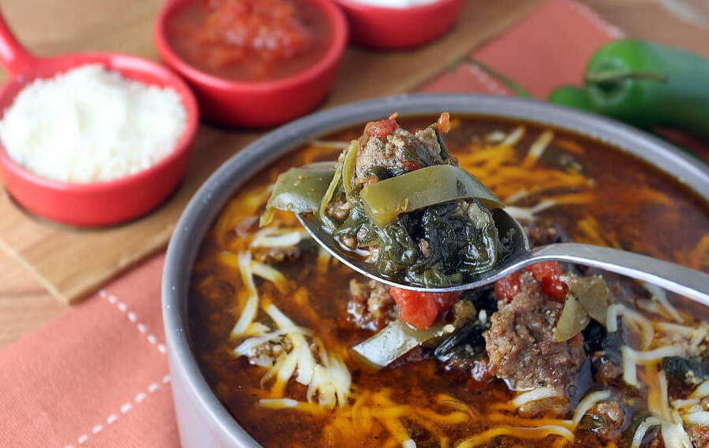

5 Keto Easy Breakfast Recipes
The ketogenic, or keto, diet is a popular nutrition plan that focuses on reducing the carbohydrates you eat to 5-10% of trusted Source of your total energy intake.
Whether you’re looking to try the keto diet for the first time or add new dishes to your routine, these recipes have you covered.
1) KETO BREAKFAST BURGER
Read More
6 Easy & Delicious Keto Lunch Recipes
The ketogenic, or keto, diet is a popular nutrition plan that focuses on reducing the carbohydrates you eat to 5-10% of trusted Source of your total energy intake.
Whether you’re looking to try the keto diet for the first time or add new dishes to your routine, these recipes have you covered.
1) KETO BREAKFAST BURGER
Read More
7 Keto Chicken Recipes
One of the most affordable and versatile ingredients for keto cooking is chicken.
Choosing the right chicken cut is important for keto recipes. We usually go with the wings, thigh, and legs.
Here are my favorite keto chicken recipes
1) KETO BBQ CHICKEN PIZZA
Read More

 


 
